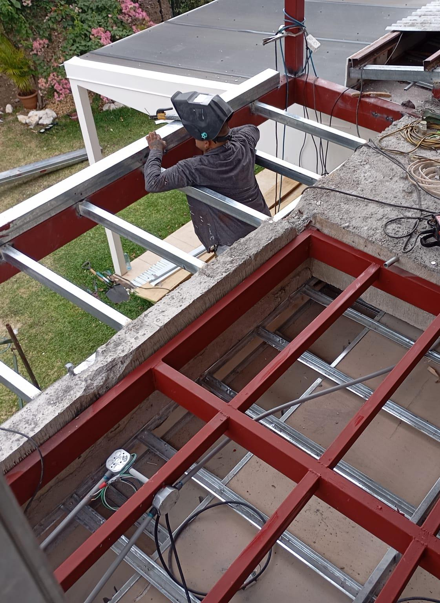
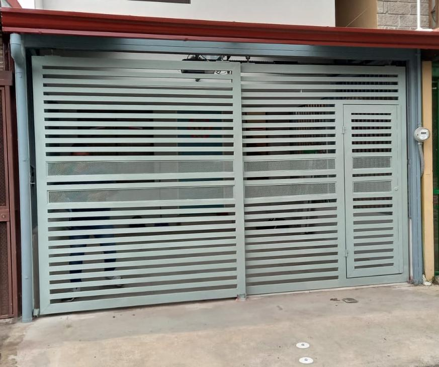
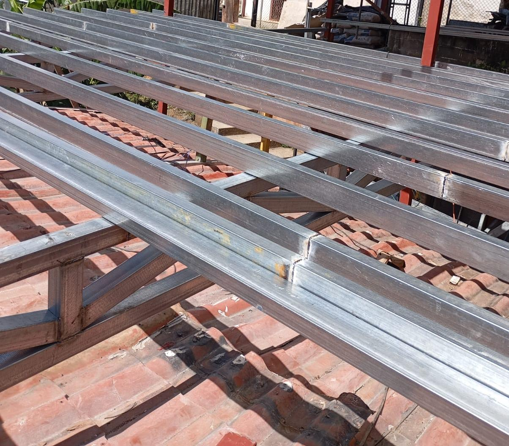
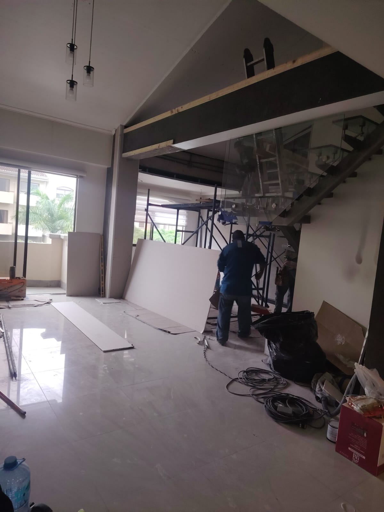

Trabajo fino · Toda la GAM
Soldadura y
estructuras
metálicas
- Escaleras, barandas y pasamanos
- Portones, verjas y rejas
- Techos y entrepisos de acero
- Estructura para segunda planta
Cotice hoy sin compromiso
6004-0817
BJ Soluciones
Construcción · Remodelación
bj-soluciones.netlify.app